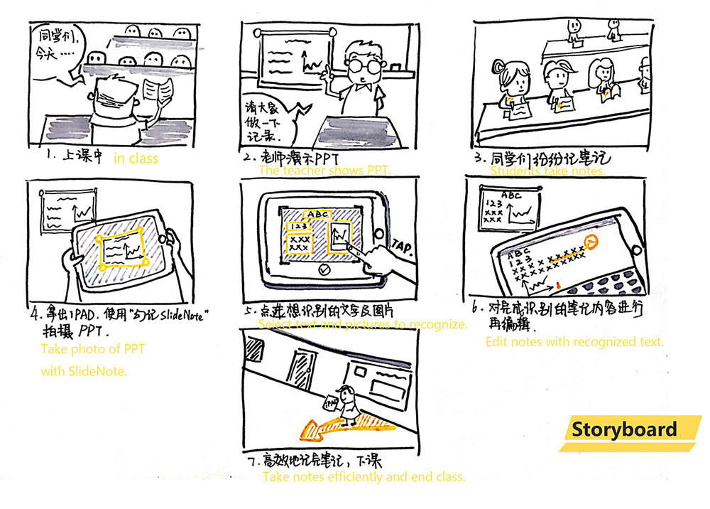

00.How do you record the slides?
It’s common to see students, businessmen taking photos of lecture or meeting slides, or writing down contents of slides in a hurry. Under these circumstances, there are problems like:
- Listeners cannot get the slides;
- It‘s too slow to write down all important contents;
- Too much photos will take up lots of storage;
- It’s hard to manage and review the notes and slides.
01.The idea of “SlideNote” comes from our daily life.
Based on class, meeting, training and similar scenarios, it focuses on users’ need to get the contents of slides and to make notes more efficiently.
There were a lot more to this project, but I will only include some important parts of the project and my contribution in our team.
02.Storyboard

04.IPAD Flowchart

05.User Interview
Based on the flowchart on IPAD and several discussions, our users are divided into four groups, considering two key behaviors: taking photos of slides and taking notes. Since the groups of people who take photos of slides will give us more hints on design, we planned interviews.

We interviewed three college students and two graduate students and three people who work in companies. Five college students come from fields of Management, Architecture, Electronical Engineering, Computer Science and Medicine. These people always attend classes, meetings, conferences in which slides play an important role.
Summarizing these interviews we get some design inspirations:
1. Since more people take photos with their mobile phones, we can design an IPhone version which focuses more on photo taking, recognition and quick notation. The startup homepage of IPhone version is the camera page which allows users to recored slides swiftly. And they can add notation directly on the photos and insert photos into notes. After lecture, they can recognize the text in the photo again.
2. However, the IPad version focuses not only on text recognition but note editing with lots of inputs. And provide both single-column and double-column mode to meet individuals' habitat of taking notes.
3. Considering different users’ ways of organizing and classifing their notes. SlideNote allows users to organize their notes into at most three layers, and their photos into two layers.
4. To improve the efficiency and effectiveness of taking notes. Note contents are associated with according slides; users can add notation quickly by hand with highlighter, pen or pencil.